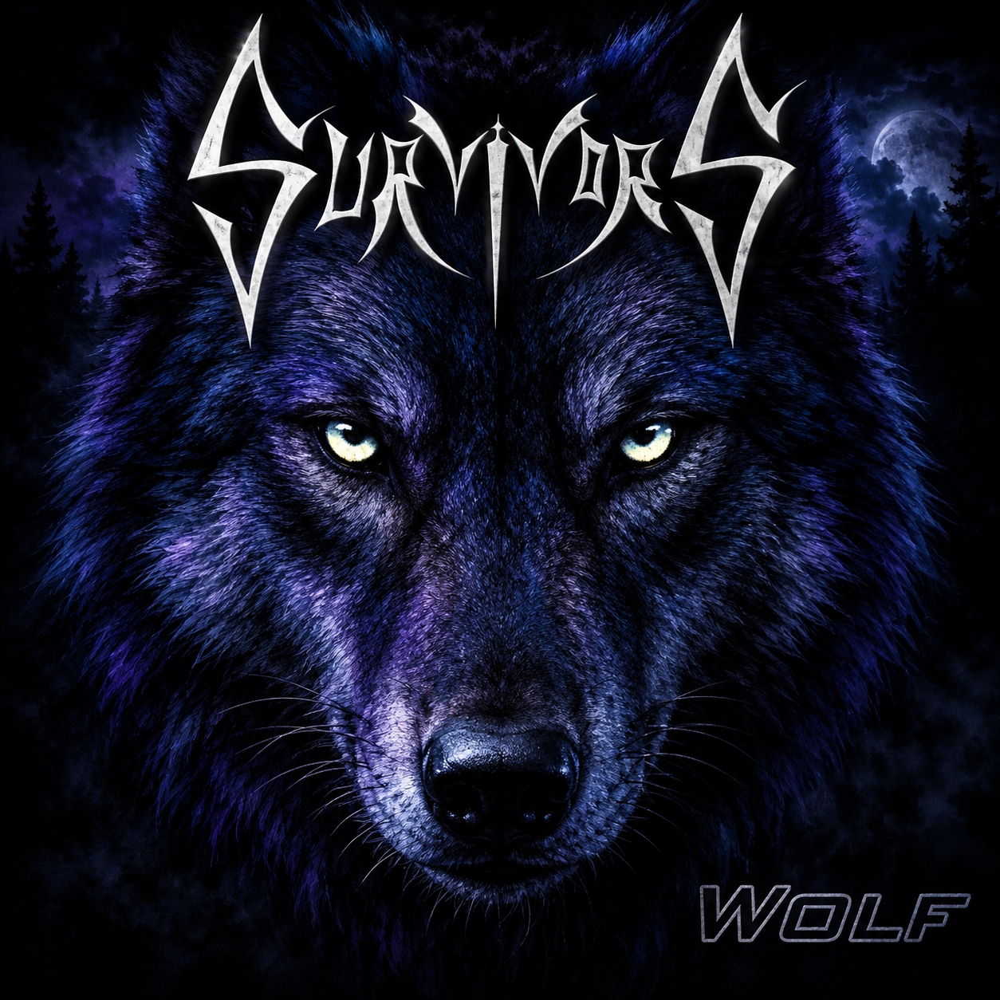
SurvivorS
WOLF
Original songs, hard rock roots and the first material that truly captured the band as intended.
DEATH TRANSITION PROCESS
Life is the transition. Birth begins the process. Death is where it ends.
ENTER THE PROCESS ↓THE PROCESS
Death Transition Process is not a band defined solely by death. It is built around life — the continuous transformation between the moment we arrive and the moment we leave, and the questions that may remain beyond it.
Growth. Loss. Anger. Love. Memory. Fear. Desire. Rupture. Reconstruction. Death. Afterlife.
Every experience changes what comes next. Every ending becomes part of another state — remembered, transformed, carried forward or left behind.
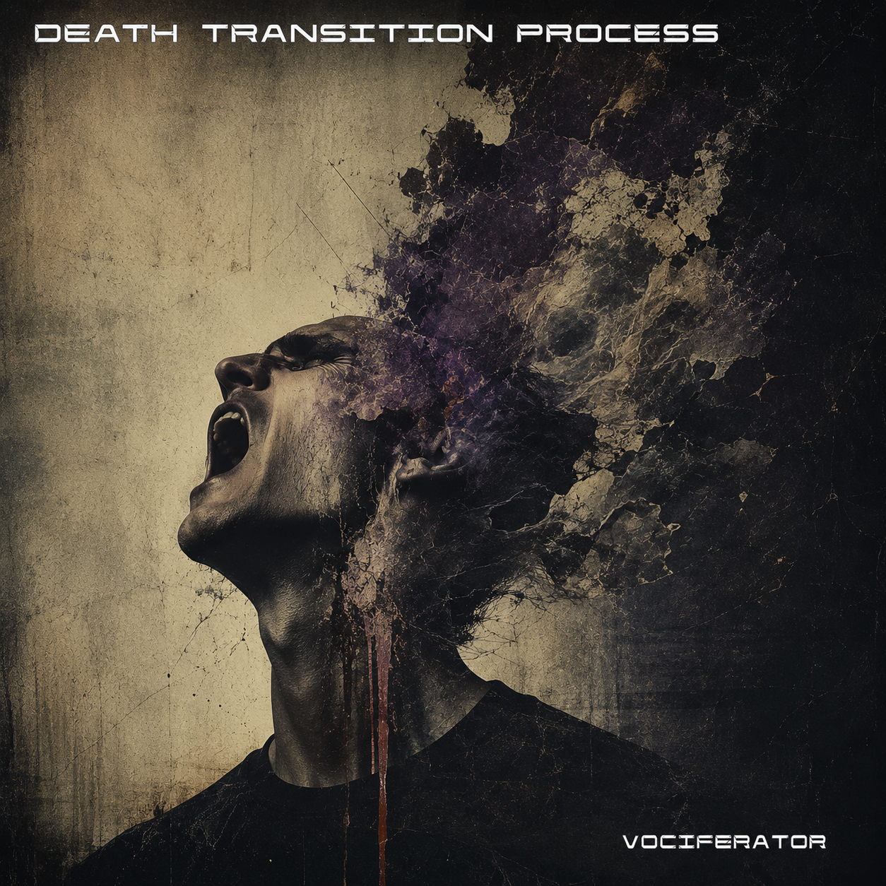
A CHAPTER IN THE PROCESS
What cannot remain inside must eventually become sound.
Vociferator is not the whole story. It is one chapter: externalization — the point where accumulated emotion, memory, conflict, experience and everything left unsaid are forced outward.
ARCHIVES / ORIGINS
DTP carries traces of earlier bands, unfinished recordings, live rooms, old demos, different voices, mistakes, experiments and changes in life. These are not the DTP — they are part of the road that led to it.

Original songs, hard rock roots and the first material that truly captured the band as intended.
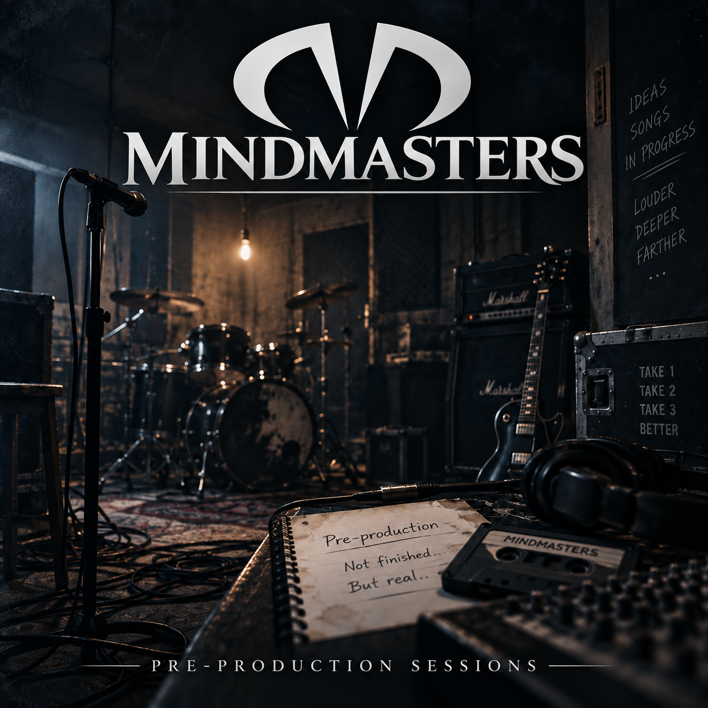
A raw live document of songs still being shaped — the only surviving record of a chapter that ended before the final recording.
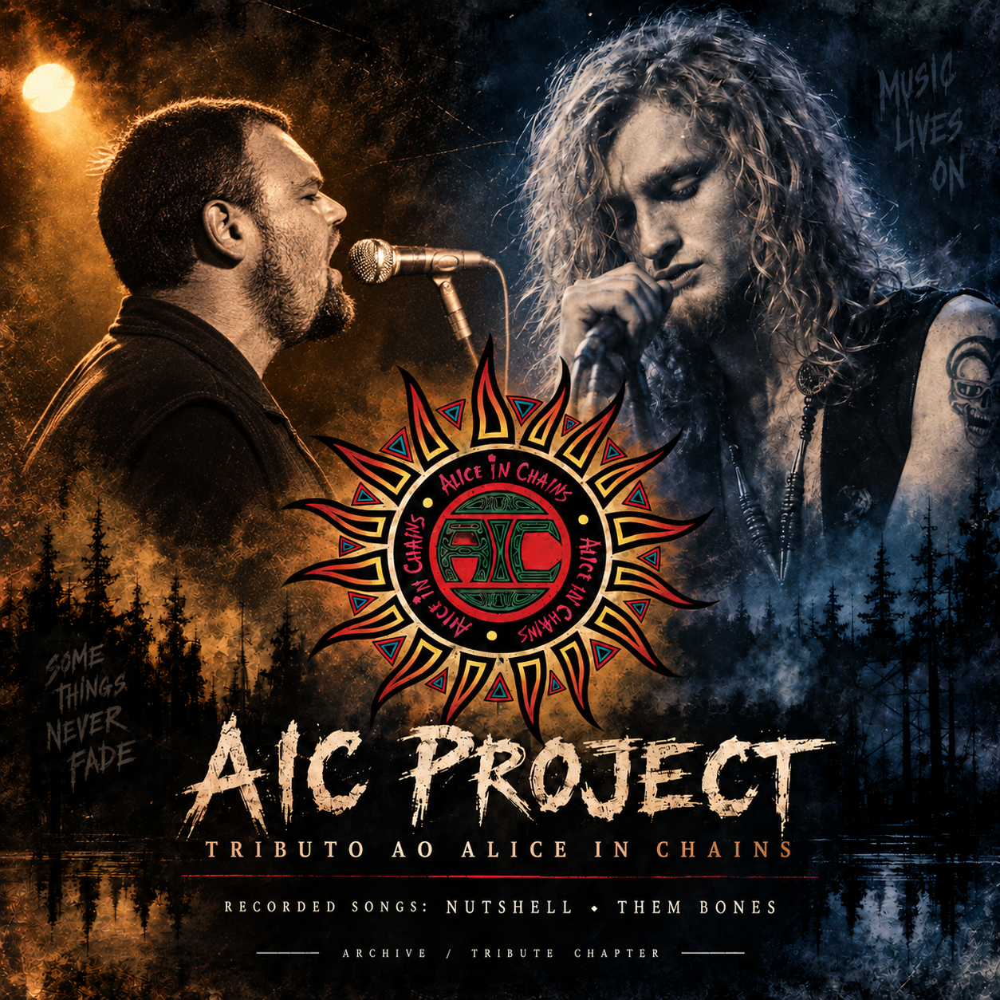
Tribute to Alice in Chains. Studio-recorded songs: Nutshell and Them Bones.
FRAGMENTS / TIME
Different years, different bands, different ways of using the same voice. The archive is less a biography than a collection of evidence that nothing stays exactly where it began.
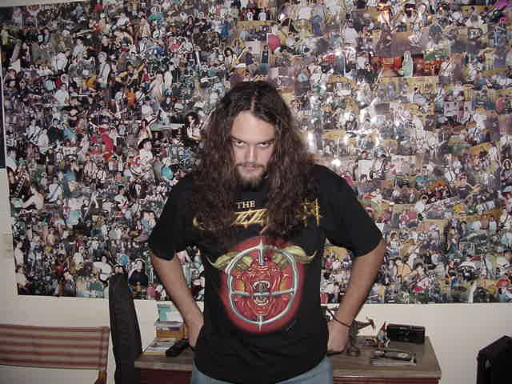
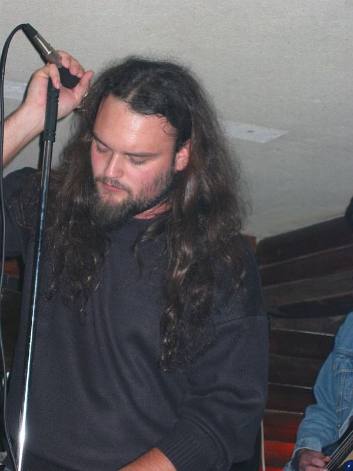
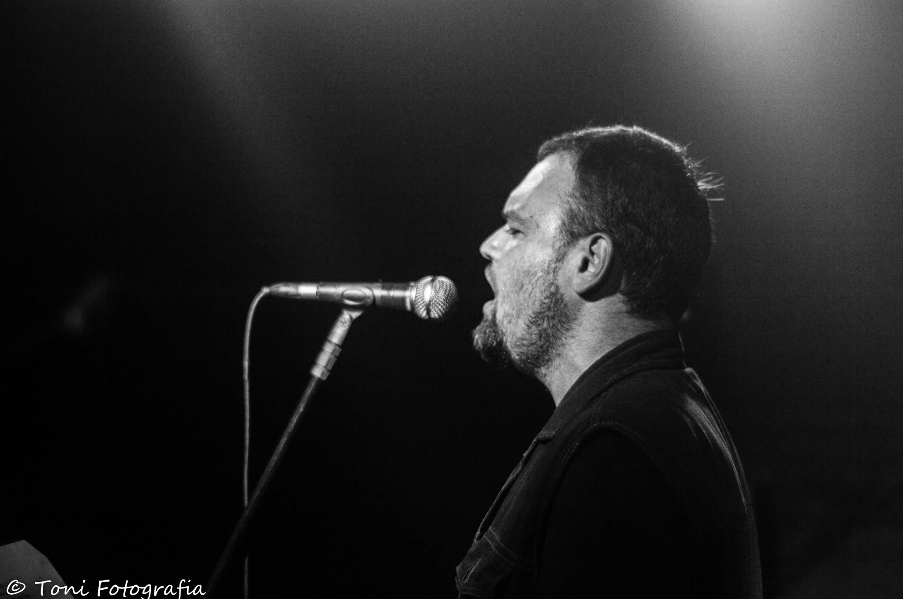
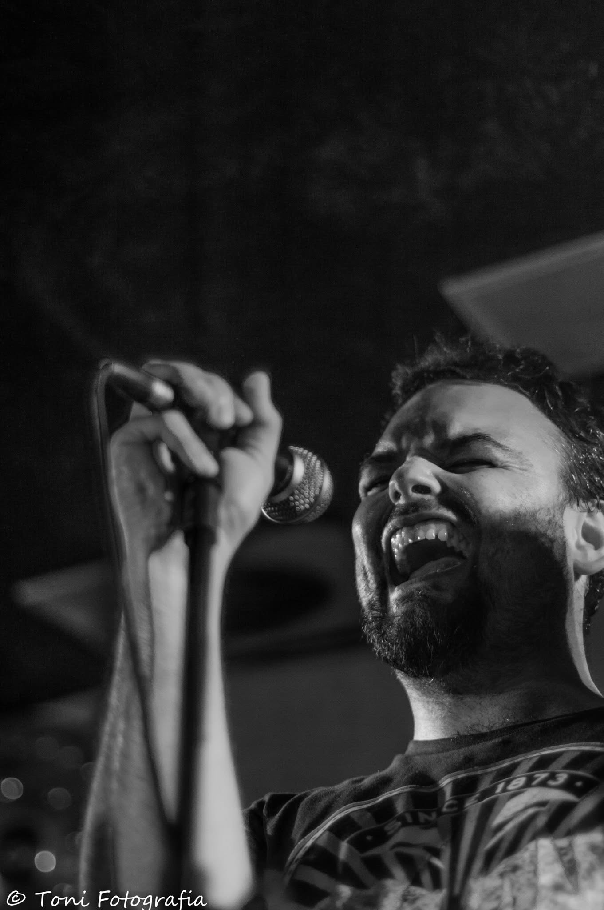
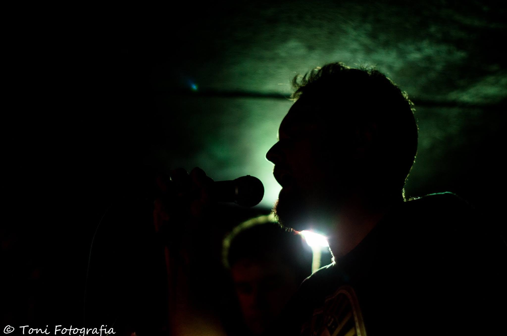
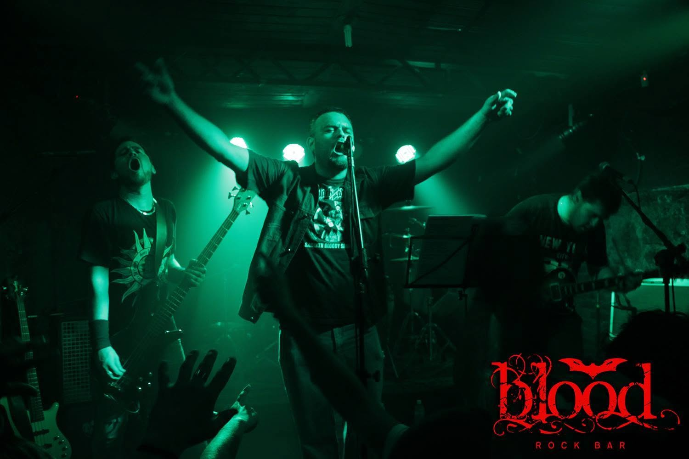
VISUAL STUDIES
These are not final covers. They are visual studies for the same chapter — from the visceral extreme to a more human, symbolic form.
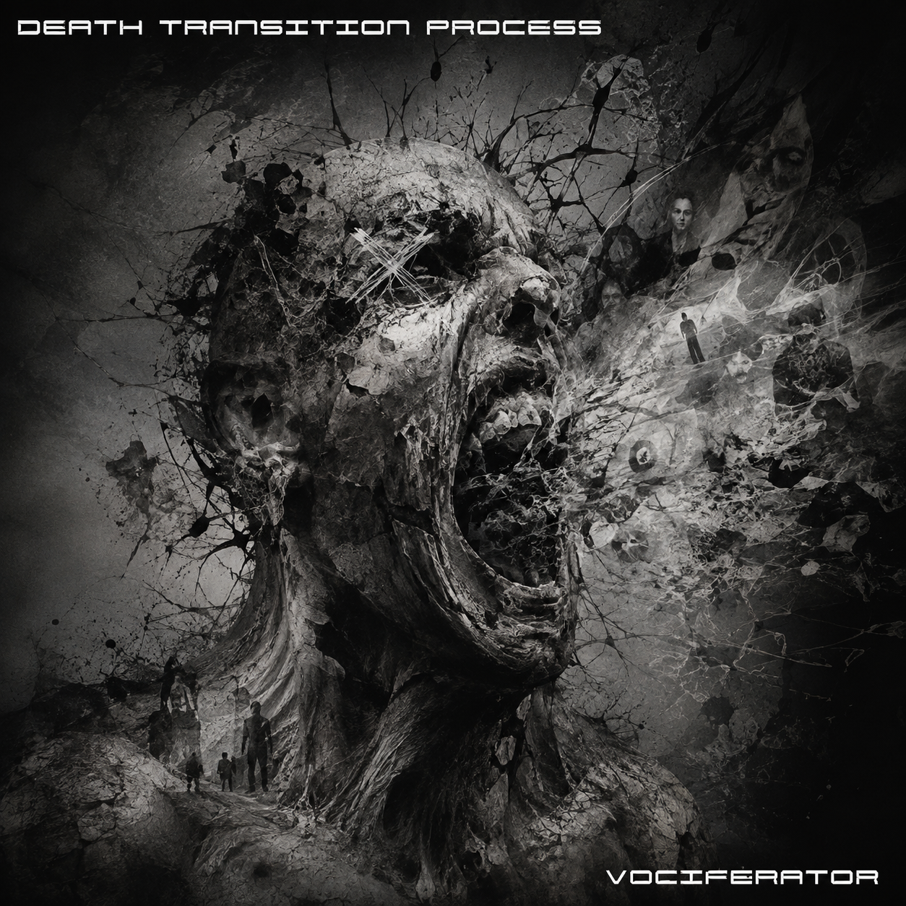
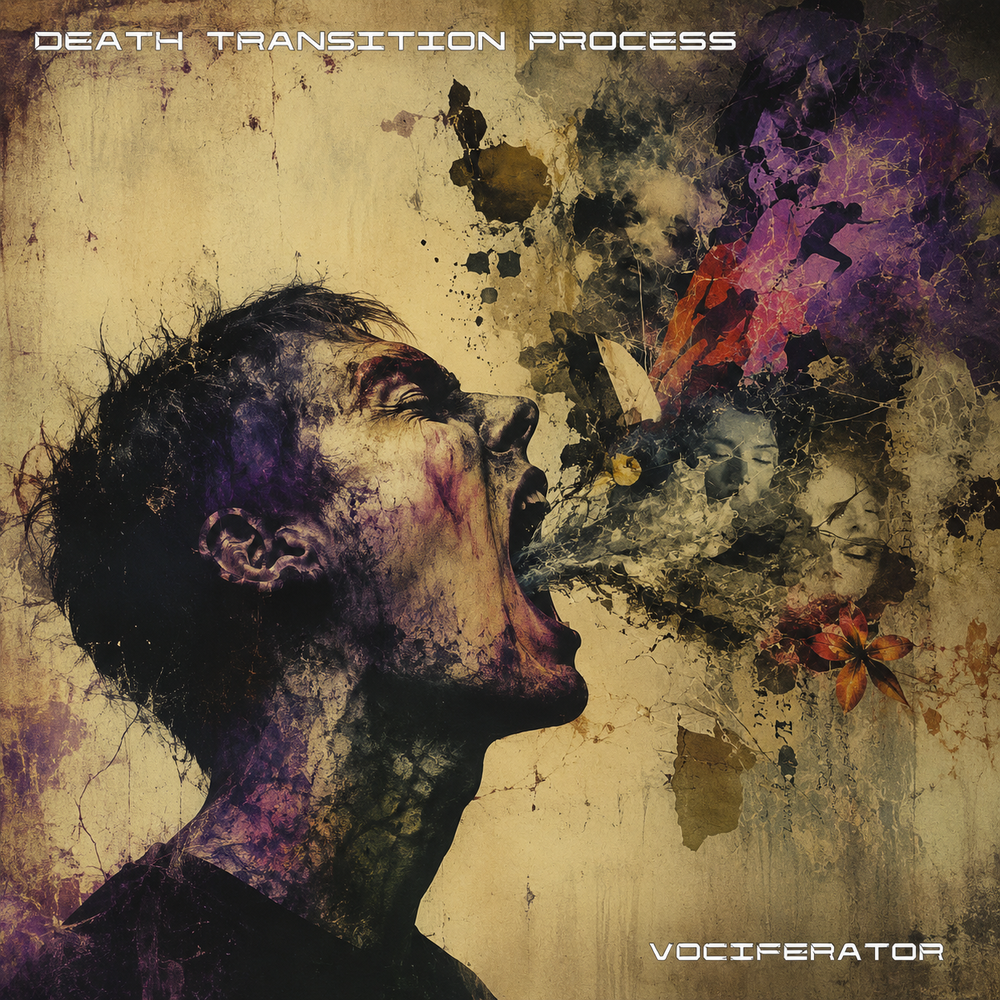